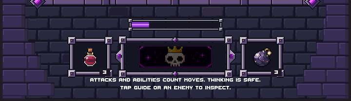
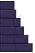
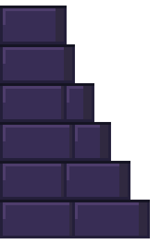
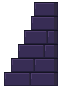
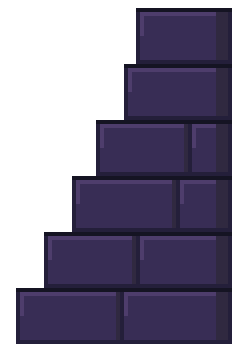
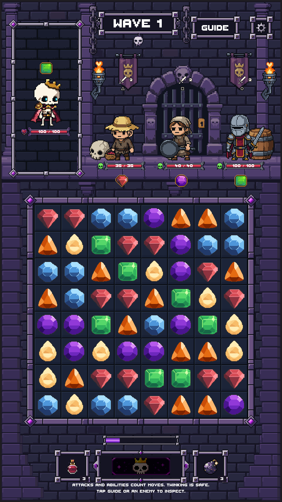

Latest: full-screen wall and bottom-edge placement
The approved side borders are retained. Only the bottom-corner additions are new. Five exact source colors, the same smooth planes and 14-pixel courses. No additional PixelLab generations.
Report | Current production view | Draft PR #205

Masonry_Corner_Left: 58 x 88, five colors

4x nearest-neighbor

Masonry_Corner_Right: 58 x 88, five colors

4x nearest-neighbor

Editor-only art review: three live enemies, Rattlebones, original gems and controls. The new additions await visual review before production selection. Nothing is merged.
